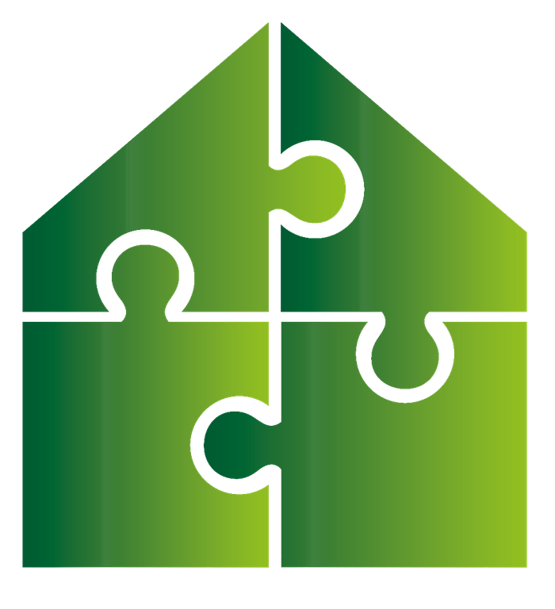
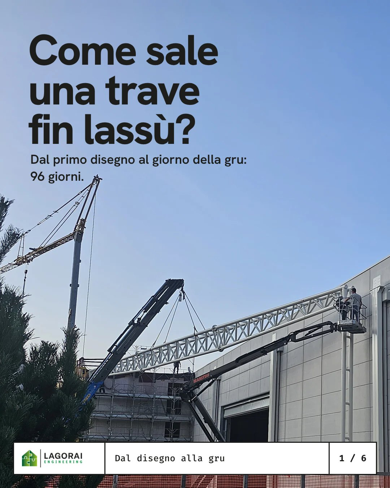
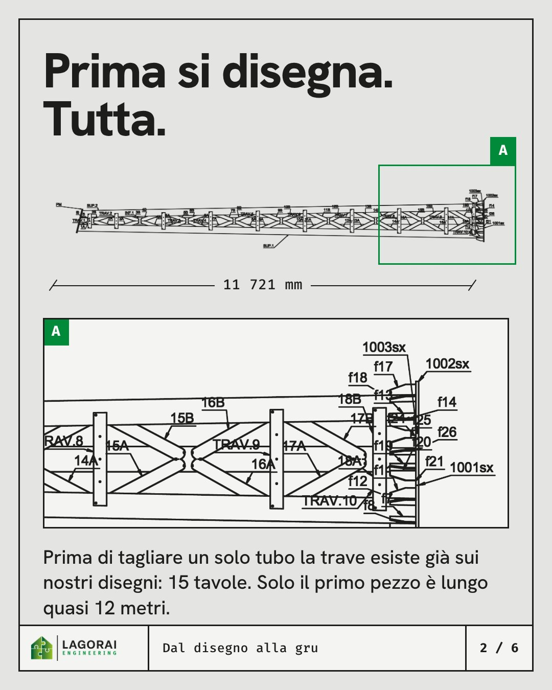
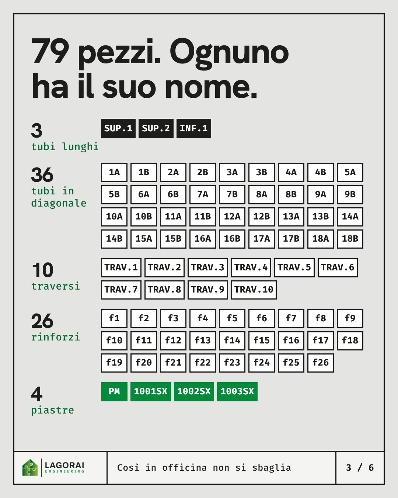
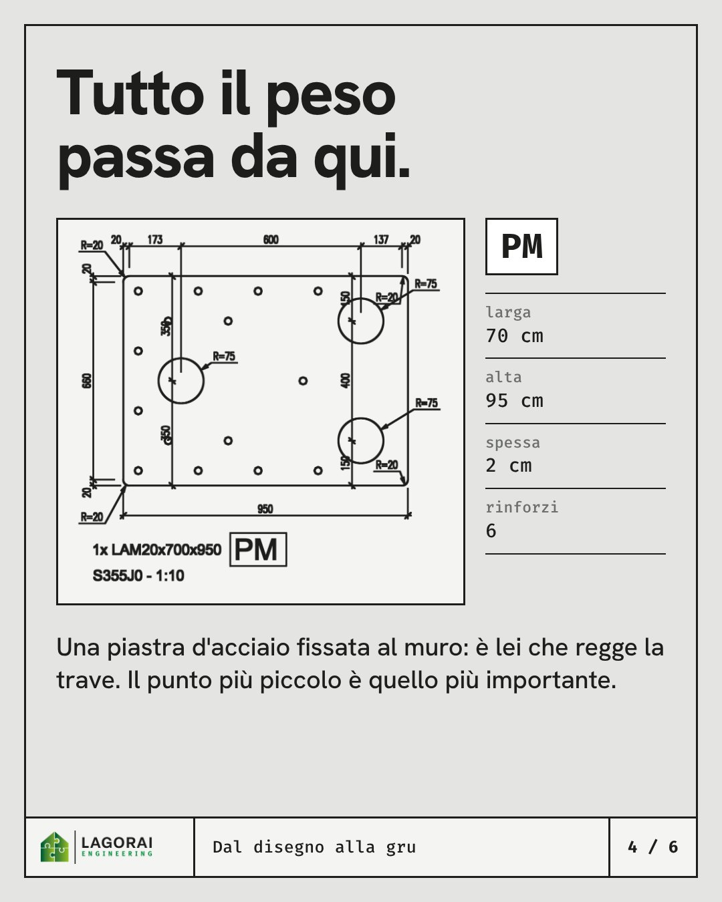
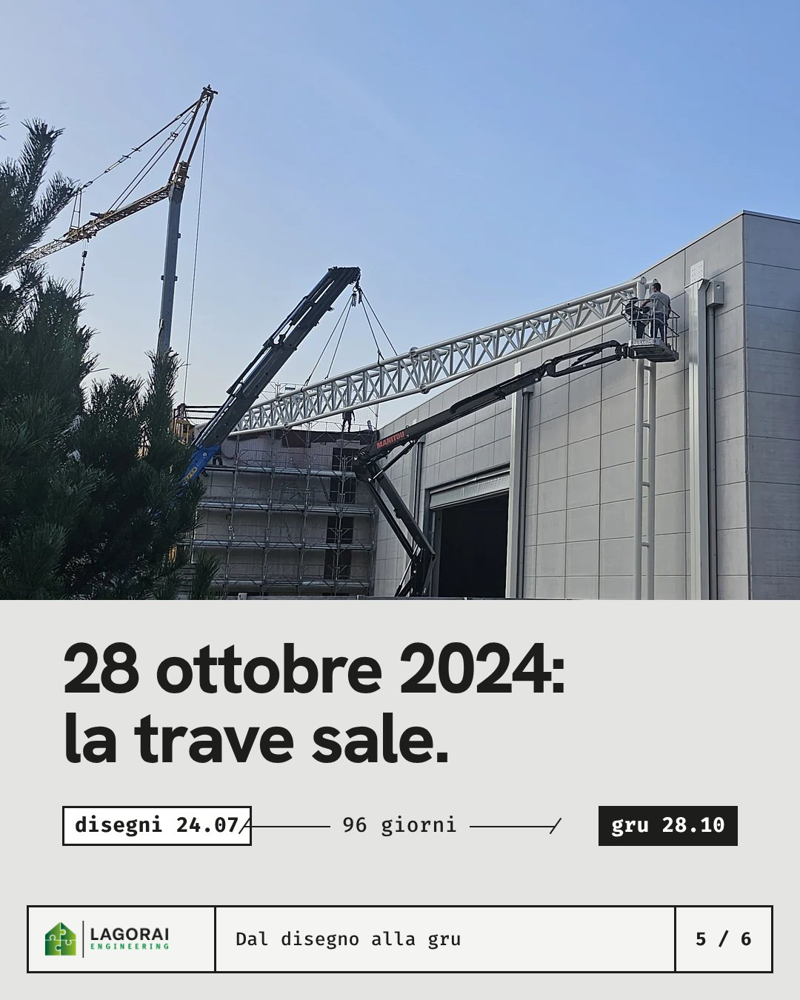
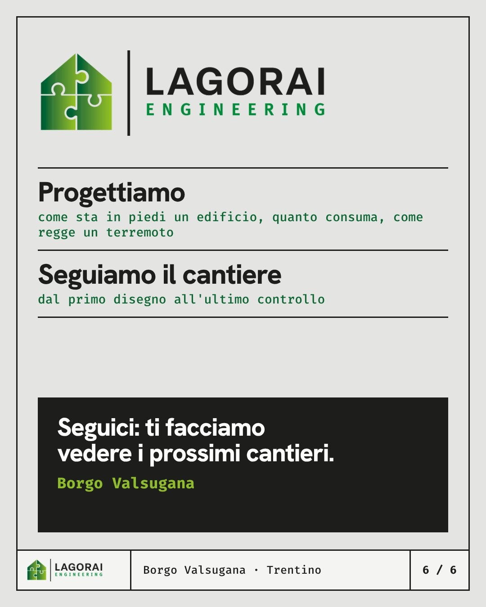

Preparate gratis da Stefano Pontalti per Lagorai Engineering
Le prove per Lagorai Engineering
Il carosello sulla trave, scritto per chi vi vede da fuori: la gente della Valsugana, non solo i tecnici. Il materiale è tutto vostro, le tavole e la foto del sollevamento. Guardatelo dal telefono, come lo vedrebbe chi vi segue. Il video lo preparo con le vostre riprese: qui sotto trovate cosa mi serve.
1. Il carosello
Instagram · Facebook · LinkedIn · 6 immagini

lagoraiengineering1 / 6






Scorri col dito o tocca le frecce
lagoraiengineering Come sale una trave fin lassù? Prima, tutta su carta.
15 tavole e 79 pezzi, ognuno col suo nome, così in officina non si sbaglia niente. I disegni sono del 24 luglio 2024: il 28 ottobre la trave era appesa alla gru.
Seguiteci: vi facciamo vedere i prossimi cantieri della Valsugana.
#cantiere #valsugana #borgovalsugana #trentino #ingegneria
Con i soli render e le tavole viene una presentazione, non il racconto del vostro lavoro. Basta quello che avete già, anche girato col telefono:
video dal cantiere, anche brevi e storti (10-20 secondi): un sollevamento, un montaggio, un sopralluogo. Se c'è un video o altre foto del giorno della trave, ancora meglio;
una registrazione dello schermo mentre girate il modello 3D della trave o dell'hotel nel vostro programma (20-30 secondi);
tre o quattro fatti per progetto: per la trave dove si trova, cosa regge, quanto pesa e cosa avete seguito voi; per l'hotel i metri quadri nuovi, i tempi e cosa cambia nella struttura;
se vi va, un vocale di 30 secondi dell'ing. Voltolini che racconta una tavola o un cantiere: lo monto io coi sottotitoli sopra i disegni;
gli originali della scuola Gozzer: il render della facciata e le tavole in PDF.
Da confermare prima di pubblicare
Il committente è d'accordo a mostrare la trave? Nella foto ho tagliato fuori nomi e targhe.
Cosa avete seguito voi (calcolo, tavole d'officina, direzione lavori)? Lo scrivo nel post.
Dove si trova la trave? Se si può dire il paese, lo scrivo: chi ci passa davanti la riconosce, ed è quello che fa girare un post.
Le misure e le sigle vengono dalle vostre tavole del 24/07/2024: se qualcosa è cambiato dopo, lo correggo.